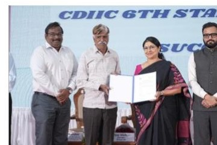
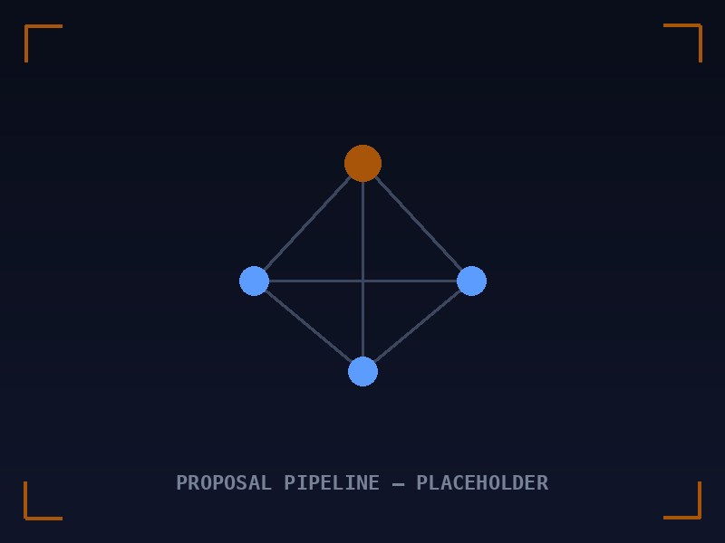

₹250 crore MoU — Government of Tamil Nadu
Land and skilling proposal supporting Zepto Logic's semiconductor design and manufacturing ambitions.
Milestones across government, defence, telecom, research, land, grants and indigenous semiconductor programme development.
Land and skilling proposal supporting Zepto Logic's semiconductor design and manufacturing ambitions.

Land allotted to support defence electronics, semiconductor assembly, testing and product engineering.

Programme support for applied innovation and hardware acceleration.

Incubation support connecting Zepto Logic with the defence technology and industrial ecosystem.

Approval supporting compact multi-band antenna research for next-generation connectivity.

Proposals spanning application processors, high-speed interface IP, precision agriculture silicon and related deep-tech programmes.